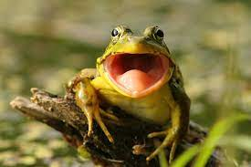
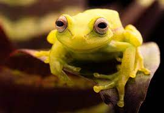
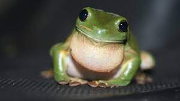
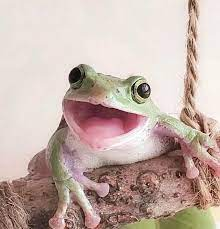
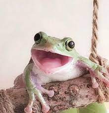

Frogs
 What are frogs?
A frog is any member of a diverse and largely carnivorous group of short-bodied, tailless amphibians composing the order Anura (literally without tail in Ancient Greek). The oldest fossil "proto-frog" appeared in the early Triassic of Madagascar, but molecular clock dating suggests their origins may extend further back to the Permian, 265 million years ago.
Types of Frogs
Tree Frogs
Tree frogs are small, usually green frogs that live in trees or other high-growing vegetation. They have suction cups on their feet to help them climb, and their wide toes help them grip branches.

Toads
Toads are a type of frog, but they are typically larger and more terrestrial than tree frogs. They have short legs and dry, warty skin. Some species of toads can produce toxins that can be dangerous to humans.
Frogs of the World
There are over 5,000 species of frogs in the world, living in a variety of habitats, from deserts to rainforests. They come in many colors, sizes, and shapes. Some frogs can even change color to blend in with their surroundings.
Frogs are an important part of the food chain, eating insects and other small animals, and providing food for larger predators. They are also indicators of environmental health, as their presence or absence can tell us a lot about the health of a particular ecosystem.
Conservation
Threats to Frogs
Frogs are facing many threats, from habitat destruction and pollution to climate change and over-collection for the pet trade. They are particularly vulnerable to the deadly chytrid fungus, which has caused massive die-offs around the world.
What You Can Do
Protecting frogs starts with protecting their habitats. You can help by reducing your use of pesticides, conserving water, and supporting organizations that work to protect frogs and their habitats. You can also join a local frog monitoring program or participate in a citizen science project to help track frog populations.
Conclusion
Frogs are an important and fascinating part of the natural world. By learning more about them and taking steps to protect their habitats, we can ensure that frogs will continue to be part of our world for generations to come.
Pictures of Frogs.
 
